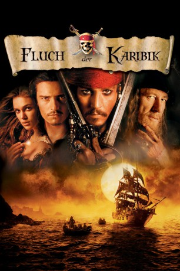

Auszeichnungen: für 5 Oscars nominiert 1 BAFTA-Awards gewonnen
 gesehen am 17.04.2016
gesehen am 17.04.2016Alternativ: Pirates of the Caribbean: The Curse of the Black Pearl
Auszeichnungen: für 5 Oscars nominiert 1 BAFTA-Awards gewonnen gesehen am 17.04.2016
 
 IMDB-Wertung: 8.0 / 10
IMDB-Wertung: 8.0 / 10  IMDB-TOP-Platzierung: 243
IMDB-TOP-Platzierung: 243  Metascore:
Metascore: 
Im 17.Jahrhundert sucht der Pirat Jack Sparrow nach einem sagenumwobenen Schatz in der Karibik, als ihn das Schicksal mit dem jungen Will Turner zusammenführt, der aus anderen Gründen auf derselben Fährte ist: nämlich den berüchtigten Captain Barbossa und seine Crew abzufangen, die Wills große Liebe Elizabeth, die Tochter des britischen Gouverneurs entführt haben. Doch Barbossa umhüllt selbst ein düsteres Geheimnis: er und seine Männer sind verflucht und das Licht des Mondes bringt ihre Existenz zum Vorschein: sie sind wie lebende Skelette, monströs und tödlich. Um den Fluch zu brechen, brauchen sie Elizabeth als Opfer. Ein Wettrennen zur Insel des Todes beginnt...
Jahr: 2003
Dauer: 143 Minuten
FSK: 12
Land: USA Studio: Buena Vista PicturesTonspuren:
Untertitel: Deutsch,
Auflösung: 1080p (1920×1080) Größe: 23654 MB
Genre: Action, Abenteuer, Fantasy
Regisseur:  Gore Verbinski
Gore Verbinski
Drehbuch: Ted Elliott, Terry Rossio, Stuart Beattie, Jay Wolpert, Ted Elliott
Soundtrack: Klaus Badelt
Darsteller:
 Johnny Depp als Jack Sparrow
Johnny Depp als Jack Sparrow Geoffrey Rush als Barbossa
Geoffrey Rush als Barbossa Orlando Bloom als Will Turner
Orlando Bloom als Will Turner Keira Knightley als Elizabeth Swann
Keira Knightley als Elizabeth Swann Jack Davenport als Norrington
Jack Davenport als Norrington Jonathan Pryce als Governor Weatherby Swann
Jonathan Pryce als Governor Weatherby Swann Lee Arenberg als Pintel
Lee Arenberg als Pintel Mackenzie Crook als Ragetti
Mackenzie Crook als Ragetti Damian O'Hare als Lt. Gillette
Damian O'Hare als Lt. Gillette David Bailie als Cotton
David Bailie als Cotton Michael Berry Jr. als Twigg
Michael Berry Jr. als Twigg Isaac C. Singleton Jr. als Bo'sun
Isaac C. Singleton Jr. als Bo'sun Kevin McNally als Joshamee Gibbs
Kevin McNally als Joshamee Gibbs Treva Etienne als Koehler
Treva Etienne als Koehler Zoe Saldana als Anamaria
Zoe Saldana als Anamaria Guy Siner als Harbormaster
Guy Siner als Harbormaster Paul Keith als Butler
Paul Keith als Butler Dylan Smith als Young Will
Dylan Smith als Young Will Jonny Rees als Officer
Jonny Rees als Officer Vanessa Branch als Giselle
Vanessa Branch als Giselle Martin Klebba als Marty
Martin Klebba als Marty LeJon als Lejon
LeJon als Lejon Jordi Caballero als Pirate , uncredited
Jordi Caballero als Pirate , uncredited Angus Barnett als Mullroy
Angus Barnett als MullroyDatei: X:\5-Pentalogie(A-Z)\Fluch der Karibik\Fluch der Karibik 1 (2003, FSK12, 1920x1080).mkv seit 15.02.2015
Festplatte: HD Collection-3(N-Z)-6(A-Z)
 Es gibt insgesamt 10 Filme in der Gruppe '5-Pentalogie(A-Z)\Fluch der Karibik'
Es gibt insgesamt 10 Filme in der Gruppe '5-Pentalogie(A-Z)\Fluch der Karibik'